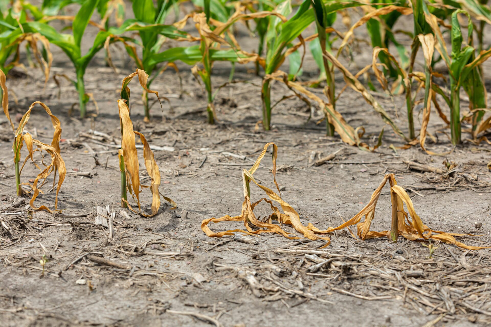

¿Qué le ocurre a las plantas con el cambio climático?
El cambio climático trae consigo un calentamiento global, cambios en los patrones de
precipitación, sequías más frecuentes e intensas, así como olas de calor.
Todo esto afecta directamente a las plantas: algunas especies pueden adaptarse,
otras se verán forzadas a desplazarse geográficamente, y otras podrían desaparecer si no encuentran condiciones adecuadas.

La fotosíntesis también se ve alterada: un exceso de dióxido de carbono puede favorecer el crecimiento de algunas especies, pero las temperaturas elevadas y la falta de agua reducen este beneficio.
Además, los cambios en las estaciones alteran la floración y la polinización,
afectando tanto a las plantas como a los insectos que dependen de ellas.
Impactos positivos y negativos para ciertas especies
Beneficios
Algunas plantas podrían expandirse a zonas que antes eran demasiado frías, colonizando nuevas áreas y aumentando su rango de distribución.
Algunas plantas podrían expandirse a zonas que antes eran demasiado frías, colonizando nuevas áreas y aumentando su rango de distribución.
Riesgos y Cultivos
Especies sensibles al calor, a las sequías o dependientes de estaciones marcadas pueden desaparecer si no logran adaptarse a las nuevas condiciones.
Productos básicos como el café, el cacao, el trigo o el arroz ya muestran descensos en su rendimiento debido a cambios en la lluvia y el aumento de plagas.
Especies sensibles al calor, a las sequías o dependientes de estaciones marcadas pueden desaparecer si no logran adaptarse a las nuevas condiciones.
Productos básicos como el café, el cacao, el trigo o el arroz ya muestran descensos en su rendimiento debido a cambios en la lluvia y el aumento de plagas.
Biodiversidad
Las especies invasoras y las malas hierbas resistentes pueden prosperar más rápido, desplazando a plantas autóctonas.
Las especies invasoras y las malas hierbas resistentes pueden prosperar más rápido, desplazando a plantas autóctonas.